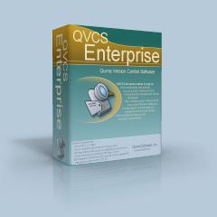

|

QVCS Enterprise Server Delivers Affordable Remote Version ControlThe web page is served by the QVCS Enterprise server at this same IP address. You can connect to this server for version control activities if you have an account. This QVCS-Enterprise server is listening for connections from a QVCS-Enterprise client on port 9889. QVCS-Enterprise ReleaseThis QVCS Enterprise server release is version: 3.1.0-SNAPSHOT. |
| For the source code, see https://github.com/jimv39/qvcsos |